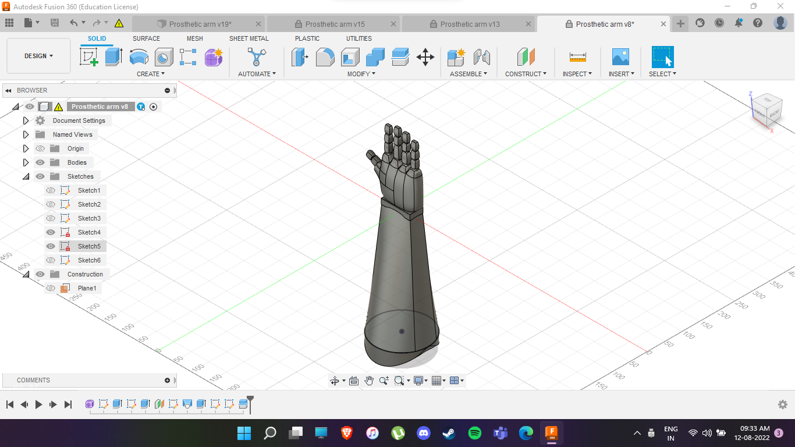
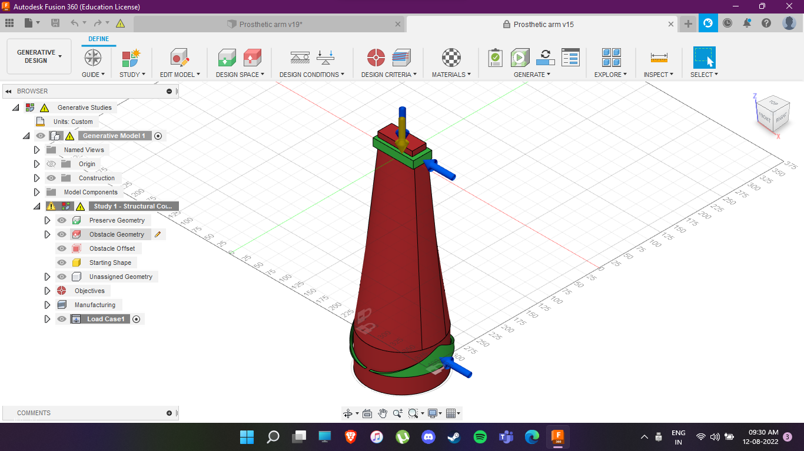
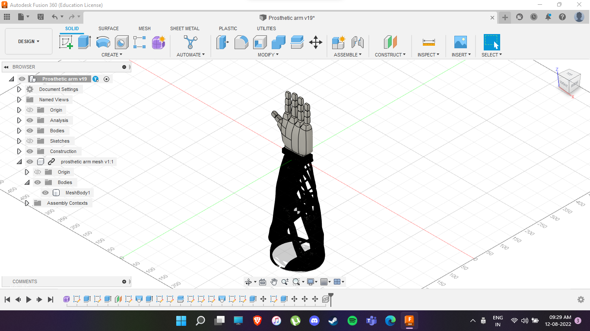

This was our very first design of the prosthetic arm, built in Fusion 360. It represents the basic skeletal structure before optimization.

This image shows the region we targeted for optimization using generative design constraints such as load, geometry, and material limits.

This is the final optimized version of the arm. Using generative design, the structure now has minimal mass with maximal strength, evident in its exoskeletal layout.